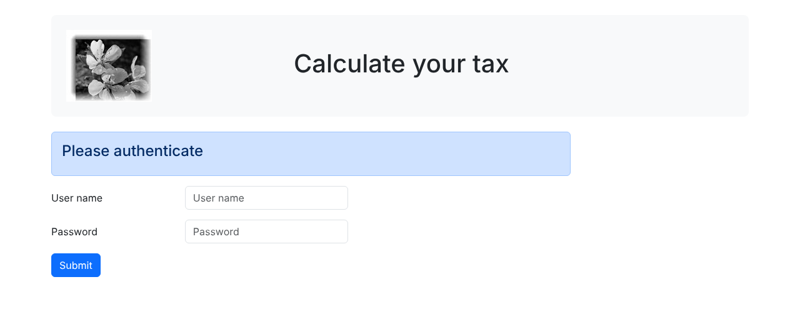

24. Exercício prático – versão 13
A versão 13 traz poucas mudanças: ela protege o acesso aos arquivos da aplicação. Não acrescenta nenhuma funcionalidade nova: as ações, as respostas JSON, XML e HTML e as views são as mesmas da versão 12. O que mudou foi a estrutura de arquivos no disco e a configuração do servidor [Apache].
24.1. O problema
No curso de PHP 7, era possível solicitar a URL do arquivo de configuração da versão 12, e o navegador o exibia. Ora, esse arquivo [config.json] contém informações sensíveis, como as credenciais dos usuários autorizados a usar a aplicação. Ele não deve estar acessível aos usuários.
Em nossa versão 12, esse arquivo já está protegido: ele fica na pasta [Data], cujo acesso o arquivo [.htaccess], introduzido na versão 8, nega (diretiva [Require all denied]). No entanto, essa proteção é aplicada caso a caso: bloqueamos apenas o que escolhemos especificamente bloquear, e todo o resto é servido. Ainda assim, há muitas coisas que não deveriam ser exibidas. Por exemplo, o navegador pode solicitar uma view diretamente, sem passar pelo controller principal:
A view é executada fora de contexto: as variáveis normalmente fornecidas pela classe [HtmlResponse] não existem. Como o [Laragon] está configurado para desenvolvimento (diretiva [display_errors=On] do PHP), as mensagens de erro são enviadas ao navegador. Elas revelam os caminhos dos arquivos no servidor, bem como os nomes das funções e classes usadas, tudo isso informação útil para quem busca atacar a aplicação. Os controllers secundários, as classes de resposta e as classes das camadas [business] e [dao] também podem ser executados por uma simples URL. Aqui, eles apenas definem uma classe, mas não há garantia de que será sempre assim.
Mais grave: toda a pasta [php8-oct-2026] do curso fica dentro da pasta [www] do [Laragon]. Os arquivos de script de console também estão acessíveis pela web, embora ninguém tenha pensado em protegê-los:
Qualquer pessoa pode ler o nome de usuário e a senha do usuário de banco de dados [dbtaxes-2019]. Ora, as versões 8 a 12 do servidor usam esse arquivo ou seu equivalente.
A abordagem correta é a inversa: bloquear tudo por padrão e, depois, permitir explicitamente apenas o que precisa ser acessível de fora. Para a nossa aplicação, apenas três arquivos precisam ser acessíveis:
- [main.php], o controller principal, que recebe todas as requisições;
- [index.php], o ponto de entrada da aplicação HTML, que redireciona para [main.php];
- a imagem [logo.jpg], que o navegador solicita por meio de uma requisição HTTP ao exibir o banner das views.
24.2. A nova estrutura de diretórios
Copiamos e colamos a pasta [scripts-web/tax/version-12] para [scripts-web/tax/version-13], depois reorganizamos seus arquivos:
- em [public], a única pasta que será acessível pela web. Ela contém os dois scripts [index.php, main.php] e, na pasta [Resources], a imagem [logo.jpg]. O nome [public] é o usado pelos frameworks PHP atuais (Symfony, Laravel) para esse mesmo papel;
- em [Config], os arquivos de configuração: [config.json] (antes [Data/config.json]) e [database.json], a configuração do banco de dados que foi retirada da pasta [Data] na versão 8. O arquivo [vhost-tax-v13.conf] será apresentado no final do capítulo;
- em [Logs], o arquivo de log, que ficava na pasta [Data];
- e em [Model], as classes das camadas [business] e [dao] do servidor. Até agora, elas eram carregadas das pastas das versões 8 e 9. Agora foram copiadas para a pasta da versão 13, junto com os recursos [TaxException, TaxAdminData, Database] (versão 5) e os utilitários [Logger, SendAdminMail] (versão 9), [XmlUtilities] (versão 11) e [Utilities] (versão 5). A pasta [version-13] contém, portanto, toda a aplicação: é a única pasta que seria copiada para um servidor de produção, sem depender de pastas de outras versões;
- a pasta [Tests] da versão 12, que continha as páginas de teste das views, não é incluída: essas páginas, de qualquer forma, não seriam mais acessíveis pela web.
Os nomes desses arquivos não mudam, nem seu conteúdo, com três exceções que veremos a seguir. Somente a biblioteca Composer [vendor] permanece em seu local original, na raiz da pasta [php8-oct-2026].
24.3. Mudanças no código
24.3.1. O arquivo de configuração
O arquivo [Config/config.json] passa a ser o seguinte:
- linha 2: o arquivo de configuração do banco de dados agora está na pasta [Config] da aplicação;
- Linhas 3–33: todos os arquivos da aplicação estão nas pastas da versão 13. Os caminhos são relativos à pasta raiz da aplicação, a pasta [version-13];
- linha 49: o arquivo de log está na pasta [Logs].
24.3.2. O controller principal [public/main.php]
O controller principal foi movido para a pasta [public]. Apenas duas linhas mudaram:
- Linha 18: a constante [ROOT_DIRECTORY] continua se referindo à pasta raiz da aplicação, em relação à qual os caminhos do arquivo [config.json] são definidos. Como o script agora está na pasta [public], essa pasta raiz é a pasta pai de [__DIR__]. Não é possível escrever [dirname(__DIR__)]: o valor de uma constante declarada com [const] deve ser uma expressão constante, e uma chamada de função não é uma. A concatenação de [__DIR__] (uma constante) e uma string é uma expressão constante;
- linha 20: o novo caminho do arquivo de configuração;
- linha 23: esta linha não muda: o caminho do loader do Composer é relativo ao diretório raiz da aplicação, que é sempre [scripts-web/tax/version-13].
O script [public/index.php] é o da versão 12. Seu redirecionamento para a URL de caminho relativo [main.php?action=init-session&type=html] continua correto, já que [index.php] e [main.php] estão na mesma pasta.
24.3.3. O banner das views
As views permanecem na pasta [Views], fora da pasta [public]: elas são incluídas pela classe [HtmlResponse] com um caminho de disco ([__DIR__ . "/../Views/$view"]) e não são solicitadas pelo navegador. Somente o fragmento [v-banner.php] muda, porque o logotipo foi movido:
- Linha 9: a URL do logotipo é relativa à URL da página exibida, que é sempre a do controller principal, [.../version-13/public/main.php]. O navegador solicitará, portanto, a URL [.../version-13/public/Resources/logo.jpg].
24.4. O arquivo [.htaccess] da aplicação
Com o [Laragon], a raiz de documentos do servidor [Apache] (diretiva [DocumentRoot]) é a pasta [www]. Portanto, tudo que está sob [www] pode ser acessado por uma URL, em particular toda a pasta [version-13]. Para restringir o acesso a tudo que não está contido na pasta [public], usamos um único arquivo [.htaccess], localizado na raiz da aplicação, dentro da pasta [version-13]. Observe que as diretivas de um arquivo [.htaccess] se aplicam à pasta que o contém e a todas as suas subpastas. O [Laragon] configura o [Apache] para ler esses arquivos (diretiva [AllowOverride All]):
Comentários
- Linha 5: quando uma URL especifica uma pasta que não tem documento padrão ([index.php], [index.html]), o [Apache] pode exibir a lista de arquivos da pasta. A diretiva [Options -Indexes] impede isso;
- Linha 8: usamos o módulo [mod_rewrite] do [Apache], o módulo de reescrita de URL, que é habilitado por padrão no [Laragon]. Uma regra [RewriteRule] tem a forma [RewriteRule pattern substitution [options]]. Em um arquivo [.htaccess], o padrão — uma expressão regular — é comparado ao caminho da URL solicitada relativo ao diretório do arquivo [.htaccess]. Para a URL [http://localhost/php8-oct-2026/scripts-web/tax/version-13/Config/config.json], esse caminho é [Config/config.json];
- Linhas 11–12: a primeira regra processa a URL da pasta da aplicação [.../version-13/], cujo caminho relativo é vazio (padrão: [^$]). Ela redireciona o navegador (opção [R=302]) para a pasta [public] e interrompe o processamento das regras (opção [L], de “last”). A substituição deve ser um caminho de URL completo: ele é obtido da variável [REQUEST_URI] do [Apache], o caminho da URL solicitada [/php8-oct-2026/scripts-web/tax/version-13/]. A condição [RewriteCond] que precede a regra compara essa variável com a expressão regular [^(.*)/$]: a parte entre parênteses — o caminho sem a barra final — fica então disponível na regra com o nome [%1]. Assim, o arquivo [.htaccess] não depende do local da aplicação na pasta [www];
- Linha 14: a segunda regra se aplica a qualquer URL cujo caminho relativo não comece com [public/] e não seja exatamente [public]: é esse o significado do [!] colocado antes do padrão. A substituição [-] significa “nenhuma substituição”, e a opção [F] (de “forbidden”) faz o [Apache] responder com o código [403 Forbidden]. A URL [.../version-13/public], sem a barra final, deve continuar permitida: o [Apache] (módulo [mod_dir]) responde a ela com um redirecionamento para [.../version-13/public/].
Este arquivo também bloqueia o acesso a si mesmo: ele não está localizado na pasta [public]. Como o caminho de uma URL é normalizado pelo [Apache] antes de as regras serem aplicadas, uma URL como [.../version-13/public/../Config/config.json] também é negada.
O curso de PHP 7 colocava um arquivo [.htaccess] contendo as duas linhas [order deny,allow] e [deny from all] em cada uma das pastas a proteger. Essa é a sintaxe do [Apache] 2.2. [Apache] 2.4 agora a aceita apenas por meio do módulo de compatibilidade [mod_access_compat], que está previsto para ser removido. A sintaxe do [Apache] 2.4 é [Require all denied], que usamos desde a versão 8.
Se você não quiser usar o módulo [mod_rewrite], uma alternativa possível usa dois arquivos [.htaccess] e a sintaxe [Require]:
- na pasta [version-13], um arquivo chamado [.htaccess] contendo apenas a linha [Require all denied]: tudo é proibido;
- na pasta [public], um arquivo chamado [.htaccess] contendo apenas a linha [Require all granted]: as permissões de uma subpasta substituem as da pasta pai, e todo o conteúdo de [public] é permitido.
Essa variante também funciona, mas a URL [.../version-13/] passa a ter o acesso negado, em vez de ser redirecionada para a pasta [public].
24.4.1. Testes com [curl]
Os arquivos da aplicação fora da pasta [public] são rejeitados:
O código [403 Forbidden] corresponde à segunda regra. Observe que a view [view-tax-calculation.php] nem sequer foi executada. Os arquivos da pasta [public] são servidos:
- linhas 1–11: o controller principal responde normalmente: a sessão JSON é iniciada;
- linhas 13–20: o logotipo é servido (tipo [image/jpeg]).
Por fim, a URL da aplicação é redirecionada para a pasta [public], cujo script [index.php] por sua vez redireciona para o controller principal:
- Linha 4: o redirecionamento da primeira regra do arquivo [.htaccess];
- linha 11: o redirecionamento do script [public/index.php].
Em um navegador, a URL que inicia a aplicação HTML passa a ser [http://localhost/php8-oct-2026/scripts-web/tax/version-13/]. Após os dois redirecionamentos, a página de autenticação aparece, junto com seu logotipo:

A aplicação funciona da mesma forma que a da versão 12. Eis a tela de cálculo do imposto após uma simulação:

As URLs que os clientes JSON e XML solicitam mudaram: o controller principal agora é [.../version-13/public/main.php]. Para usar o cliente JSON da versão 12 com o servidor da versão 13, basta alterar a chave [urlServer] em seu arquivo de configuração.
24.5. Em produção: a raiz de documentos é a pasta [public]
O arquivo [.htaccess] é uma solução adaptada do [Laragon], onde uma única pasta, [www], contém várias aplicações. Em um servidor de produção, a abordagem é diferente: a pasta [public] é definida como a raiz de documentos do site. O restante da aplicação fica então fora da estrutura de diretórios do site: nenhuma URL pode acessá-lo e nenhuma regra é necessária. Essa é a organização recomendada pelos frameworks PHP.
Com o [Apache], define-se um virtual host, isto é, um site adicional servido pelo mesmo servidor [Apache]. O arquivo [Config/vhost-tax-v13.conf] fornece um exemplo:
- Linha 4: o [Apache] também escuta na porta 8013. Um virtual host pode ser distinguido dos outros por sua porta, como aqui, ou por seu nome ([tax.test], por exemplo). Usar a porta evita ter de declarar um novo nome de host;
- Linhas 5–14: a configuração do virtual host que responde às requisições recebidas na porta 8013;
- linha 7: a raiz de documentos deste site é a pasta [public] da versão 13. A URL [http://localhost:8013/main.php] refere-se, portanto, ao arquivo [public/main.php];
- Linhas 8–13: direitos de acesso à pasta [public]. [AllowOverride None] informa ao [Apache] que ele não precisa procurar arquivos [.htaccess]: toda a configuração está aqui, o que também é mais rápido.
No [Laragon], coloque esse arquivo — ajustando os caminhos para a pasta de instalação do [Laragon] — na pasta [<laragon>/etc/apache2/sites-enabled] e reinicie o [Apache] pela janela do [Laragon] (clique no botão [Stop] e depois no botão [Start All] ). Você terá então:
- linhas 1–6: a URL do site é atendida pelo script [public/index.php];
- linhas 8–9: o controller principal responde normalmente;
- linhas 11–18: o logotipo é servido;
- linhas 20–23: o arquivo de configuração não é mais rejeitado; ele simplesmente não existe para o servidor web: a resposta é [404 Not Found]. O arquivo [.htaccess] da pasta [version-13] não é lido, pois está fora da raiz de documentos.
Nos dois casos — seja o [Laragon] com o arquivo [.htaccess] ou um virtual host cuja raiz é a pasta [public] — o código da aplicação é o mesmo. Esse é o benefício da nova estrutura de diretórios: o conteúdo público fica reunido em uma única pasta, e tudo o mais é protegido por padrão.